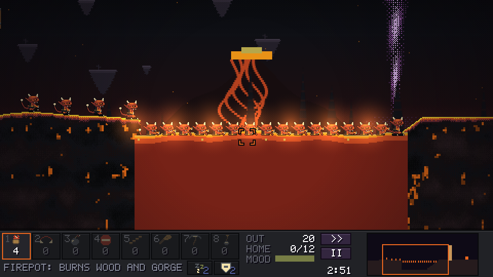

From the journals of the wandering scholar
Of the Imps
Home: Cinder forgeLed by: The ForgemasterSubstance: CindersClans: Cinderhorn and Sootwing
Imps are friendly enough. It is only their sense of humour that keeps a tally of the dead.
site/img/journal/race-imp-study.webpThe Imp settlement sat in cracked black rock that glowed from within, and was smaller than its reputation. Lava ran to the forges along carved stone channels, unhurried, as if it knew the way.
An Imp waded across one to greet me and seemed disappointed when I declined to follow. They were courteous and curious. I found the tripwire on the bridge by watching where the young Imps were not standing. The Forgemaster’s word was obeyed, though for reasons I could not untangle.
There is no water anywhere in the place. Not in a cup, not in a cistern. I asked what happens when it rains. Every Imp in the room went quiet, and we spoke of other things.
Imp settlements are small and scattered, yet they keep shared structures of authority. Leadership mixes several factors and varies with local circumstances.
They cooperate with their own kind, are reasonably tolerant of other races, and are cautious but will defend themselves.
Magic is central to their power. Surviving fire is their defining trait; water kills them. Lava runs through their homes in carved stone channels.
Not yet settled: whether Imps live on the surface or underground, whether Imps and Dwarves have any contact, and what the Forgemaster looks like.
As observed in Marching Orders
| In short | Fire-loving pranksters |
|---|---|
| Good at | Walk on lava, ignore fire |
| Bad at | Water kills them |
| Own skills | Hop (one big jump), Firepot (burns wood and gorgers) |
| Clans | Cinderhorn: +1 firepot if map has it; Sootwing: hop reaches 5% further |

Never accept the loan of a bridge.
Scorch marks on the walls in a pattern. Not writing. Possibly a score.
site/img/journal/race-imp-home.webp